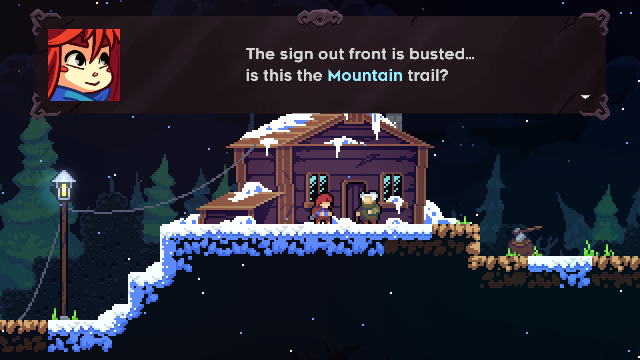

Celeste




Lançamento:Janeiro de 2018
Plataformas:Nintendo Switch, PlayStation 4, Xbox One, PC, e outros
Celeste é um aclamado jogo de plataforma indie desenvolvido por Maddy Makes Games. A narrativa segue Madeline, uma jovem determinada a escalar a montanha Celeste, uma tarefa que é tanto uma jornada física quanto emocional.
Características Principais
- Desafios de Plataforma: Enfrente uma série de desafiadoras fases de plataforma repletas de saltos precisos, movimentos rápidos e obstáculos complexos.
- História Profunda: A trama aborda temas de autoaceitação, saúde mental e superação pessoal, com uma narrativa envolvente e personagens memoráveis.
- Design de Níveis: Cada capítulo oferece novas mecânicas e desafios únicos, mantendo a jogabilidade fresca e estimulante.
- Estilo Visual e Trilha Sonora: A estética pixel art vibrante e a trilha sonora emocionalmente carregada criam uma experiência imersiva e inesquecível.
Em Celeste, a escalada da montanha serve como uma metáfora para os desafios internos da protagonista, tornando a jornada não apenas um teste de habilidade, mas também um profundo mergulho na luta pessoal e na realização de si mesmo. Com uma combinação de jogabilidade desafiadora e uma narrativa tocante, Celeste é aclamado por seu impacto emocional e inovação no gênero.